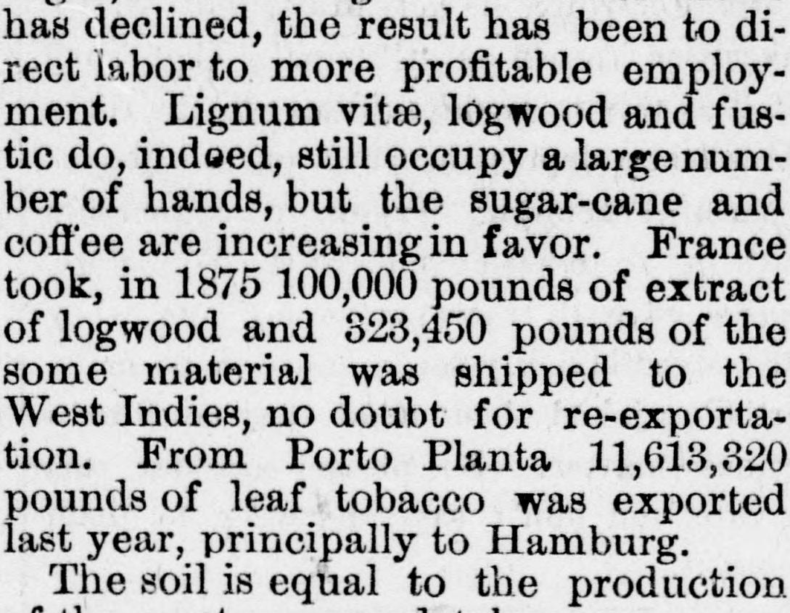
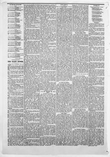

Lignum vitse, logwood and fustic do, indeed, still occupy a large number of handsEl guayacán, el palo de tinte y el fustete ocupan, en verdad, todavía un gran número de manos
Watertown Republican. Watertown, Wis., October 25, 1876. Page 6. Published by J.W. Lawton. A weekly newspaper, 1860–1906.Watertown Republican. Watertown, Wis., 25 de octubre de 1876. Página 6. Publicado por J.W. Lawton. Periódico semanal, 1860–1906. View the originalVer el original


See the full pageVer la página completaAccording to the Watertown Republican, the Dominican Republic's exports include lignum vitae, logwood, fustic, coffee, sugar-cane, and leaf tobacco (notably from Porto Plata, which surpassed the capital in trade activity). The newspaper notes that the population of 250,000 welcomes foreign immigration regardless of race or color, drawing individuals with capital from Cuba, the Bahamas, and France. Additionally, Major Stuart expresses the opinion that Samana could become a major commercial emporium if its advantages are fully utilized.Según el Watertown Republican, las exportaciones de la República Dominicana comprenden guayacán, palo de Campeche, fustete, café, caña de azúcar y tabaco en rama (destacando el de Puerto Plata, plaza que superaba a la capital en dinamismo comercial). El diario señala que su población de 250.000 habitantes acoge con agrado la inmigración extranjera sin distinción de raza o color, atrayendo a capitalistas de Cuba, las Bahamas y Francia. Asimismo, el mayor Stuart opina que Samaná podría convertirse en un gran emporio mercantil si se aprovechan cabalmente sus ventajas.
FULL TEXT:TEXTO COMPLETO:
SANTO DOMINGO.SANTO DOMINGO.
Signs of Progress—Wonderful Resources of the Island.Signos de progreso—Maravillosos recursos de la isla.
The following is from the London Times: Holders of the Santo Domingo loan, who remember that Colonel Mendes, the diplomatic representative of Santo Domingo, expressed before the Foreign Loans Committee the willingness of his government to refund to those entitled the sum of £38,000, which the government had received out of the total proceeds of the loan, will read with interest Major Stuart’s hopeful report upon the resources of the Dominican Government. The report appears among the commercial papers recently issued by the Foreign Office. Major Stuart is Minister Resident at Hayti and Charge d’Affaires to the Dominican Republic. The imports in 1875 were £171,159 in value, the exports £97,936 at the port of Santo Domingo alone. The direct imports from Great Britain amounted to only £3,581, but British manufactures (cotton, hardware, crockery) to the value of £72,000 were imported through St. Thomas and Curacoa. This country is thus the leading state in the trade, the United States coming next with £48,000, while France, the next European state to ourselves, in this branch of commerce only sends goods to the value of £13,731. The principal exports are timber and sugar, and although the timber trade has declined, the result has been to direct labor to more profitable employment. Lignum vitæ, logwood and fustic do, indeed, still occupy a large number of hands, but the sugar-cane and coffee are increasing in favor. France took, in 1875 100,000 pounds of extract of logwood and 323,450 pounds of the some material was shipped to the West Indies, no doubt for re-exportation. From Porto Planta 11,613,320 pounds of leaf tobacco was exported last year, principally to Hamburg.Lo siguiente es del Times de Londres: Los tenedores del empréstito de Santo Domingo, que recuerdan que el coronel Mendes, el representante diplomático de Santo Domingo, expresó ante el Comité de Préstamos Extranjeros la disposición de su gobierno de reembolsar a quienes tuvieran derecho la suma de £38,000, que el gobierno había recibido del total de los ingresos del empréstito, leerán con interés el esperanzador informe del mayor Stuart sobre los recursos del Gobierno dominicano. El informe aparece entre los documentos comerciales recientemente emitidos por el Ministerio de Relaciones Exteriores. El mayor Stuart es Ministro Residente en Haití y Encargado de Negocios ante la República Dominicana. Las importaciones en 1875 fueron de £171,159 en valor, las exportaciones de £97,936 solo en el puerto de Santo Domingo. Las importaciones directas desde Gran Bretaña ascendieron a solo £3,581, pero las manufacturas británicas (algodón, ferretería, loza) por valor de £72,000 fueron importadas a través de Santo Tomás y Curacoa. Este país es así el estado líder en el comercio, viniendo los Estados Unidos después con £48,000, mientras que Francia, el siguiente estado europeo después de nosotros, en esta rama de comercio solo envía mercancías por valor de £13,731. Las principales exportaciones son madera y azúcar, y aunque el comercio de madera ha declinado, el resultado ha sido dirigir el trabajo hacia empleos más provechosos. El lignum vitæ, el palo de tinte y el fustete ocupan, en efecto, todavía un gran número de manos, pero la caña de azúcar y el café están aumentando en favor. Francia tomó, en 1875 100,000 libras de extracto de palo de tinte y 323,450 libras del mismo material fueron embarcadas a las Indias Occidentales, sin duda para su reexportación. Desde Puerto Plata se exportaron el año pasado 11,613,320 libras de tabaco en hoja, principalmente a Hamburgo.